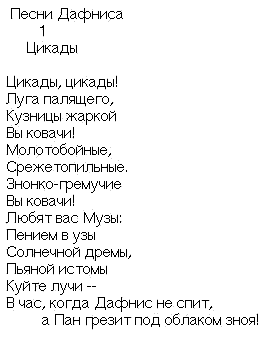

Notes 72
art Eurythmy is, beyond the theoretical writings of Steiner, first and foremost "a performing art" combining what appears to the uninitiated as a form of "dance-theater."
Strich German "dash" has the same initial sound as the name of "Steiner."
ether body A key element in Steiner's writings, the "ether body" is connected to that world beyond the perception of the "physical body."
memory in memory It is through memory according to Steiner that we re-connect to the supersensible world.
Ding an sich German "thing in itself" Cf. Kant.
res Latin "thing."
Ontology The branch of metaphysics dealing with "the nature of being."
twelve categories Kant's categories are "1. Of Quantity: Unity, Plurality, Totality; 2 Of Quality: Reality, Negation, Limitation; 3. Of Relation: Inherence and Subsistence, Causality and Dependence, Community; 4. Of Modality: Possibility &endash; Impossibility, Existence - Non-existence, Necessity &endash; Contingence." Cf. Critique of Pure Reason
[skrezhetolil'nye] Russian &emdash;[skrezhet] is "grinding, gnashing, gritting."
(V. Ivanov) &emdash; Viacheslav Ivanov 1866-1949 has the poem "Cicadas" from which Bely borrows these images: "blacksmiths" and "cicadas. The image that will follow of the smoke filled library likely relates to the home of V. Ivanov

waving wings Bely has an intriguing set of drawings/paintings made in Berlin in 1913 and Arlesheim 1914 to accompany his meditations in which arms extend into wings that embrace and shelter one. I am grateful to Taja Gut for having shared these unpublished materials with me.